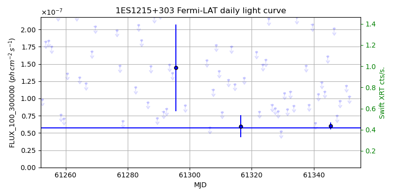
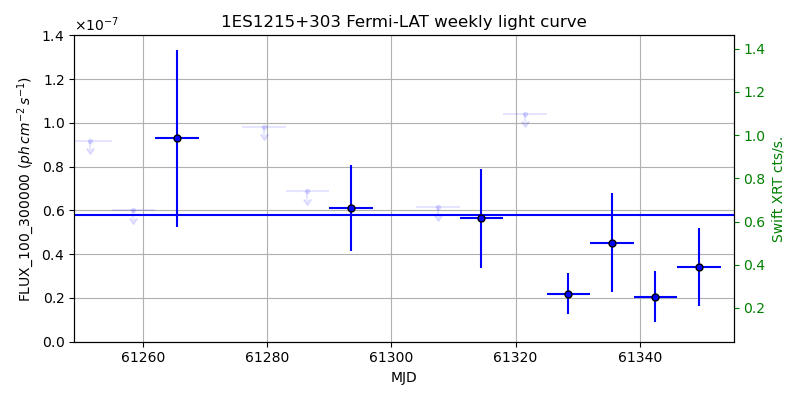
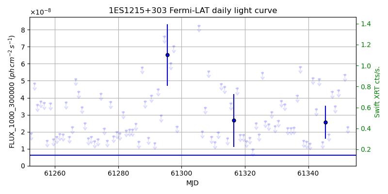
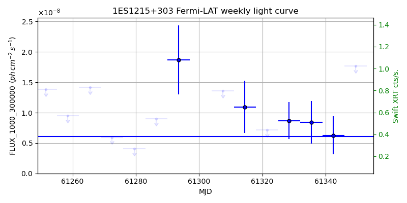

LAT Lightcurve site: https://fermi.gsfc.nasa.gov/ssc/data/access/lat/msl_lc/source/1ES_1215p303
Swift site: https://www.swift.psu.edu/monitoring/source.php?source=1ES1215+303
NED: Query
Time of last update of this page: UT: 2026-11-13 16:24 (MJD: 61357.684)
| Property | Value |
|---|---|
| R.A. | 12:17:52.08 |
| Dec. | 30:07:01.2 |
| z | 0.129 |
| 3FGL SpectrumType | PowerLaw |
| 3FGL PL Index | 1.97 |
| 3FGL Flux_100_300000 | 5.77e-08 1 / (s cm2) |
| 3FGL Flux_1000_300000 | 6.10e-09 1 / (s cm2) |
| 3FGL Flux >200 GeV | 3.46e-11 1 / (s cm2) |
| 3FGL Extrap. Crab >200 GeV | 0.15 |
| 3FGL Flux After EBL Absorption >200GeV | 1.92e-11 1 / (s cm2) |
| 3FGL EBL Crab Fraction >200GeV | 0.08 |

| MJD | dMJD | Flux | dFlux | Frac3FGL | FracCrab>200GeV | EBLFracCrab>200GeV |
|---|---|---|---|---|---|---|
| 61348.50 | 0.50 | 9.62e-08 | 0.00e+00 | 0.00 | 0.00 | 0.00 |
| 61349.50 | 0.50 | 2.53e-07 | 0.00e+00 | 0.00 | 0.00 | 0.00 |
| 61350.50 | 0.50 | 1.19e-07 | 0.00e+00 | 0.00 | 0.00 | 0.00 |
| 61351.50 | 0.50 | 1.03e-07 | 0.00e+00 | 0.00 | 0.00 | 0.00 |
| 61352.50 | 0.50 | 2.75e-07 | 0.00e+00 | 0.00 | 0.00 | 0.00 |

| MJD | dMJD | Flux | dFlux | Frac3FGL | FracCrab>200GeV | EBLFracCrab>200GeV |
|---|---|---|---|---|---|---|
| 61321.50 | 3.50 | 1.04e-07 | 0.00e+00 | 0.00 | 0.00 | 0.00 |
| 61328.50 | 3.50 | 2.20e-08 | 9.31e-09 | 0.38 | 0.06 | 0.03 |
| 61335.50 | 3.50 | 4.53e-08 | 2.25e-08 | 0.79 | 0.12 | 0.07 |
| 61342.50 | 3.50 | 2.06e-08 | 1.15e-08 | 0.36 | 0.05 | 0.03 |
| 61349.50 | 3.50 | 3.42e-08 | 1.76e-08 | 0.59 | 0.09 | 0.05 |

| MJD | dMJD | Flux | dFlux | Frac3FGL | FracCrab>200GeV | EBLFracCrab>200GeV |
|---|---|---|---|---|---|---|
| 61348.50 | 0.50 | 3.50e-08 | 0.00e+00 | 0.00 | 0.00 | 0.00 |
| 61349.50 | 0.50 | 4.43e-08 | 0.00e+00 | 0.00 | 0.00 | 0.00 |
| 61350.50 | 0.50 | -1.00e+00 | 0.00e+00 | 0.00 | 0.00 | 0.00 |
| 61351.50 | 0.50 | 5.35e-08 | 0.00e+00 | 0.00 | 0.00 | 0.00 |
| 61352.50 | 0.50 | 2.28e-08 | 0.00e+00 | 0.00 | 0.00 | 0.00 |

| MJD | dMJD | Flux | dFlux | Frac3FGL | FracCrab>200GeV | EBLFracCrab>200GeV |
|---|---|---|---|---|---|---|
| 61321.50 | 3.50 | 7.14e-09 | 0.00e+00 | 0.00 | 0.00 | 0.00 |
| 61328.50 | 3.50 | 8.68e-09 | 3.05e-09 | 1.42 | 0.21 | 0.12 |
| 61335.50 | 3.50 | 8.40e-09 | 3.51e-09 | 1.38 | 0.20 | 0.11 |
| 61342.50 | 3.50 | 6.28e-09 | 3.13e-09 | 1.03 | 0.15 | 0.08 |
| 61349.50 | 3.50 | 1.77e-08 | 0.00e+00 | 0.00 | 0.00 | 0.00 |
--------------------------------------------------------- Using user-supplied coords: 12:17:52.08 30:07:01.2 2000 --------------------------------------------------------- FLWO UT night of: 2026-11-14 Local Sid. @ Midnight: 03:09 Sunset (-15.0) (local, UT): 18:35 01:35 Sunrise (-15.0) (local, UT): 05:42 12:42 Moonrise (local, UT): Moonset (local, UT): 20:50 03:50 Moon phase: 0.22 --------------------------------------------------------- AzTime LSID UT Obj_el Obj_az Mn_el Mn_az Sep. --------------------------------------------------------- 18:35 21:44 01:35 -18.2 325.2 20.1 218.2 111.5 19:05 22:14 02:05 -21.6 331.1 16.0 223.7 111.6 19:35 22:44 02:35 -24.4 337.5 11.6 228.6 111.8 20:05 23:14 03:05 -26.5 344.3 6.9 233.2 111.9 20:35 23:44 03:35 -27.8 351.5 2.0 237.3 112.1 21:05 00:14 04:05 -28.3 358.8 -2.2 241.2 112.2 21:35 00:44 04:35 -28.1 6.2 -9.0 244.8 112.4 22:05 01:14 05:05 -27.0 13.5 -14.6 248.2 112.6 22:35 01:44 05:35 -25.1 20.4 -20.4 251.4 112.8 23:05 02:14 06:05 -22.5 26.9 -26.2 254.5 113.0 23:35 02:44 06:35 -19.3 33.0 -32.1 257.5 113.2 00:05 03:14 07:05 -15.6 38.6 -38.1 260.6 113.4 00:35 03:45 07:35 -11.4 43.7 -44.2 263.8 113.6 01:05 04:15 08:05 -6.7 48.4 -50.2 267.1 113.9 01:35 04:45 08:35 -1.0 52.6 -56.3 270.9 114.2 02:05 05:15 09:05 3.6 56.5 -62.4 275.3 114.4 02:35 05:45 09:35 8.9 60.1 -68.4 281.1 114.7 03:05 06:15 10:05 14.5 63.5 -74.2 289.9 115.0 03:35 06:45 10:35 20.3 66.6 -79.6 306.2 115.3 04:05 07:15 11:05 26.3 69.5 -83.2 343.5 115.5 04:35 07:45 11:35 32.3 72.3 -82.1 35.1 115.8 05:05 08:15 12:05 38.4 74.9 -77.4 61.2 116.1 05:35 08:45 12:35 44.6 77.5 -71.8 73.4 116.4 05:42 08:52 12:42 46.0 78.1 -70.5 75.2 116.5 --------------------------------------------------------- Dark hours >55 deg.: 0.00